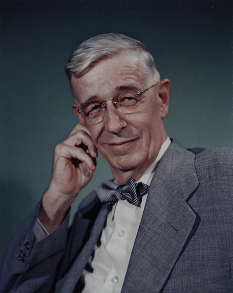
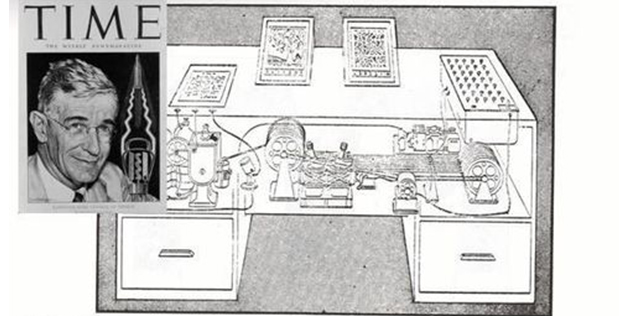
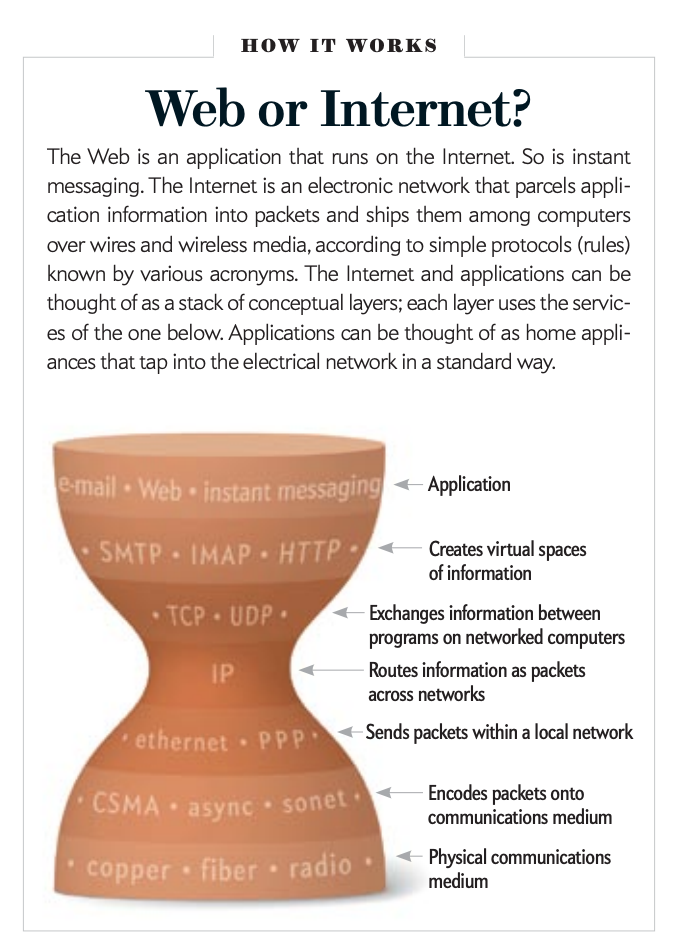
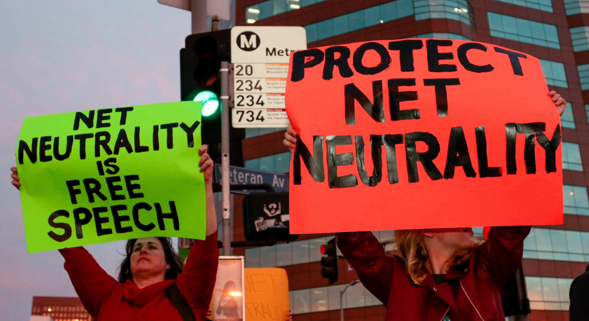

Vannevar Bush wrote an essay titled "As We May Think" in which he introduces the concept of "memex," an interactive hypertext system for organizing information.
Bush notes that the Memex would store large volumes of multimedia data and organize that data based on associations created by the user.
In this way, a network would be created that Bush felt would mirror the way the human brain organizes information.

I thought that the reading was interesting because Bush kind of predicts the technology that would be developed years after his essay was published.
He focuses a lot on new modes of image making like television, photography, and film and imagines future calculating machines that predict the coming world of computers,
hypertext communications, and digitization. This essay brings up an interesting discussion connecting the powers of the human mind to the powers of technology.
It gives us insight into the emerging challenges brought about by our rapid creation of knowledge and recording of human experiences.
A particular quote that I liked was "Such machines will have enormous appetites. There will always be plenty of things to compute in the detailed affairs of millions of people doing complicated things."
I find comfort in the idea that there is a seemingly infinite number of topics and people to make connections with through the web.
No matter what you like, there is bound to be value in your curation, contribution and resharing.
 In the article "Long Live the Web," Tim Berners Lee, the inventor of the world wide web, makes points about the internet and the web and how it is currently being threatened in today's world.
Tim notes that we should care about what is happening with the web right now as our freedom to connect to whatever websites we want is at risk, as well as our dependency on the web as a public resource and a means of communication.
A concept that Tim associates with the web is "universality," meaning the web is usable by all people, it is accessible to all people, and it should work with any form of information.
In the article "Long Live the Web," Tim Berners Lee, the inventor of the world wide web, makes points about the internet and the web and how it is currently being threatened in today's world.
Tim notes that we should care about what is happening with the web right now as our freedom to connect to whatever websites we want is at risk, as well as our dependency on the web as a public resource and a means of communication.
A concept that Tim associates with the web is "universality," meaning the web is usable by all people, it is accessible to all people, and it should work with any form of information.

Something that stood out to me in the article is the mentions of net neutrality and the issues that come along with trying to end it. Net neutrality is the principle that internet service providers should keep their internet speeds the same for all websites and not prioritize big companies over smaller ones.
A point that Tim brings up is that "exempting wireless from net neutrality would leave users open to discrimination of service." I found this interesting because it relates to the issue of the digital divide in which there is a gap between those who have access to technological devices and the internet and those who do not.
With high access prices and low incomes, the cost of unrestricted, neutral Internet connection in many areas is unaffordable to many people. People living in these communities often only have access to the internet using their phones, therefore exempting wireless connection from net neutrality discriminates against these people
as network providers will prioritize service for those who can afford to pay for internet connection. I thought it was interesting to see how some intersections of sociology apply to technology even though it wasn't explicitly stated here.

I also found it important that Tim mentioned that free speech should be protected.
The internet, as it exists today, is an open forum for free speech and freedom of expression. People are free to publish both popular and unpopular viewpoints on the web and they are treated equally in terms of how their data gets from servers to screens.
People have the right to information and regulating or censoring said information violates that right.
Last edited on 9/20/20 by Kathy Tran